Top 10 Most Cleanest Cities in the World
Everybody wants to have their city very clean. It is very hard to live in the dirty city. So everyone desires of a city whose air is fresh and clean. However, the factors like proper planning helps to make the city clean but the ever increasing population is making this things very difficult. The main reasons for city getting dirtier are because of the humans. It is humans who are widely using cars, bikes and make the places around them dirty.
However, there are some of the cities in the world, which are very clean and it has less amount of pollution. The cleanliness plays a very important role in showing the values the city holds and the steady progress of the country.
Here is the list of 10 cleanest cities in the world that might surprise you!!!
| 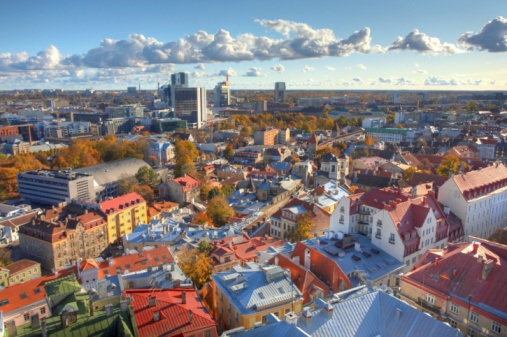 |
- Tailinn, Estonia:
Tallinn is the capital of Estonia, the small Baltic country ranked as having the best air quality by the WHO (Estonia is also the most wired in the world and a leader in e-government). More than half of the country's land is covered by trees and public transit helps to keep emissions low.
While saying that "in Estonia, clean air is as natural as tooth brushing in the moring in a decent family," Keit Pentus, Minister of the Environmentally, emphasizes that residents must remain vigilant via "more environmentally friendly energy production and more modern and comfortable pubic transport."
Clean air is something we cannot, sadly, take for granted today - all the more reason to keep working to make the air in these cities and around the world is the best it can be.
|
- Zurich, Switzerland:
Located near Germany on Swizerland's northern border. Zurich has a well-developed and highly efficient public transportation system of trains, boats, buses and trams. The city also encourages bike riding and has tried a number of innovative methods to main air quality such as outifitting buses with mobile sensor-all the better for residents and visitors to enjoy its architecture, cultural institutions and lake.
|
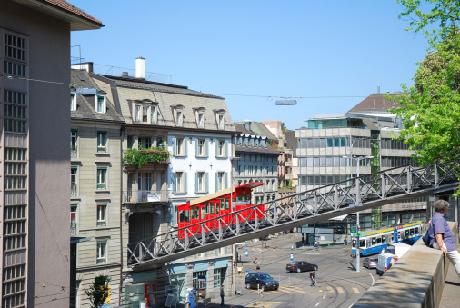 |
 |
- Stockholm, Sweden:
Stockholm has an extensive public transportation system. The Swedish capital also has the largest percentage of clean vehicles in Europe with about 5 percent of all of its vehicles being hybrids. Stockholm has also imposed a congestion charge on cars in its central area and promoted cycling. It's a wonderful city to walk around in; Stockholm's archipelago offers ready access to the wilderness.
|
- Helsinki, Finland:
The capital of Finland is one of the cleanest metropolitan centers in Europe thanks to efforts to limit emissions from vehicles and industry; the government says that as musch as over half of the particle pollution in the country comes from elsewhere. The city has wide streets to cut down on traffic congestion and also advises residents to take public transit when air quality is poorer.
|
 |
| 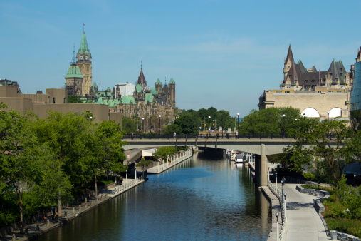 |
- Ottawa, Ontario, Canada:
From a light rail system to a Spring Cleaning the Capital program in which 60,000 volunteer join together to clean parks and other public spaces, the Canadian capital has established a number of measures to keep its streets and air clean. The Rideau canal (pictured above) runs through a good part of the city and, in the winter when it freezes, becomes a huge outdoor skating rink.
|
- Calgary, Alberta, Canada:
The WHO ranks the air quality of Calgary, Canada, highly, even with a large gas and oil industry in the region. Thoughtful urban planning and public transportation help to manage traffic congestion. Calgary is located in southern Alberta province and maintains three sanitary landfill sites for screening garbage and removing biodegradable and recyclable materials.
|
 |
 |
- Great Falls, Montana, USA:
Situated in an area of great natural beauty with hiking trails and nature refuges, Great Falls is located in north-central Montana. The city's residents have worked to keep their air clean, successfully fending off the construction of a 250-megawatt coal-fired power plant that would have released 2.1 million tons of carbon emissions into the air per year. The power company said it would instead built a 120-megawatt natural gas-fired plant.
|
- Honolulu, Hawall, USA:
Honolulu means " sheltered bay" or " place of shelter" in native Hawaiian; this aptly describes the city on the island of Oahu Honolulu is about 2,00 miles away from the U.S mainland, beyond where particles from burning coal can travel. The Diamond Head and Koko Head craters are nearby and the city has low levels of ozone and particle matter and receives plenty of rain. A well-designed transit system with dedicated bus lanes also helps to cut down on emissions.
|
 |
 |
- Santa Fe, New Mexico, USA:
New Mexico's capital has some of the cleanest air in the U.S, with low counts of both particle pollution and ozone-in fact, it is one of only 20 U.S. Cities whose ozone levels have consistently been low. Situated in a region with 1.5 million acres of forest, the city has strict regulations to limit the burning of wood in the open air. Besides this, Santa Fe has been designated a UNESCO Creative City for its thriving art, crafts and design community.
|
- Whitehorse, Yukon, Canada:
The largest city in northern Canada, Whitehorse in the Yukon, has some of the cleanest air of any city in the world, according to the WHO. As Whitehorse mayor Bev Bukway says,
" A lot of people come up north and they smell the air and the say 'Oh wow. Amazing. The air smells so good.' And we tend to take it for granted because we just have that all the time."
Whitehorse can thank a lower population density and stricter regulations for its clean air, as well as a favorable climate.
|
 |
Top 10 Most Polluted Cities in the World
With urbanization, industrialization, modernization, the world has witnessed one of the serious, life-threatening problems-Pollution. It has been a great matter of concern to all of the mankind and every part of the world is perceiving the effects of pollution. Especially in the urban areas, air pollution, noise pollution, water pollution and light pollution are the major issues. For the coming generations, it will be really hard to sustain life on this planet. The slogans and mottos are just being reserved for Environment days, but nothing is actually brought to practice.
This list elucidates the importance of management of a city, preventing pollution causing agents and bringing about a good environment to live in.
Here is the list of Top 10 Most polluted cities in the world that have recorded highest PM 2.5 level rankings according to WHO and the countdown follows:
- Baoding, China:
- Xingtai, China:
- Bamenda, Cameroon:
- Raipur, India:
- Patna, India:
- Al Jubail, Saudi Arabia:
- Riyadh, Saudi Arabia:
- Allahabad, India:
- Gwalior, India
- Zabol, Iran
| 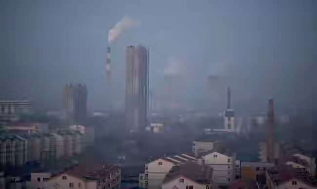 |
- Baoding, China:
This city in Hebei province of Chian is spread over an area of about 8,500 miles.It has been one of the victim of Chian's all time high air pollution level that is being called the Airpocalypse. The city is always found to be covered by thick smog, which can even burn one's eyes. The residents are living in a toxic environment with grey skies over their head. WHO reports say that the city records 126 in PM 2.5 levels and people are going for masks to protect themselves in the harsh environment.
|
- Xingtai, China:
This is yet another city in the Hebei province of China that has a population of about 7,104,100 spread over an area of 4,821 mi. It is a major coal mining hub in China and has the worst air quality in whole of China. Many industries have been shut down by the government, in order to control air pollution. Still then, thick photochemical smog prevails in the city, making it hard to breathe also. According to WHO reports, the city records 128 PM 2.5 levels and in spite of various measures taken by the government, air pollution has still remained a great challenge in this city.
|
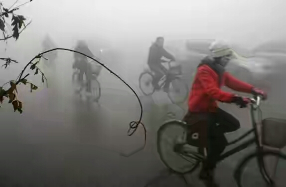 |
| 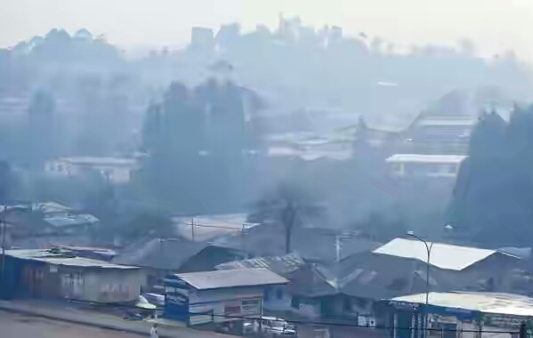 |
- Bamenda, Cameroon:
It is a city located in north-western Cameroon and has a population of about 500.000 people. It is the only African city in the Top 15 most polluted cities in the world. The city records 132 in PM 2.5 levels and 141 in PM 10 level rankings. The pollution index of the city is alarming 96.55 and is a serious matter of concern. The processing and production industries and faulty management of resources has led to increased levels of pollution in the city.
|
- Rapiur, India:
This is the capital city of the Indian state Chhattisgarh. The city recorded 250 micrograms of suspended particulate matter and 350 ppm in the concentration of dust particles, which are too very higher than the fixed standards. Owing to reasons like mismanagement of toxic waste from industries, hospital wastes, increase in vehicles, increased constructions and fast growing population, pollution level in the city has reached alarming levels that is a wreaking havoc to the residents.
|
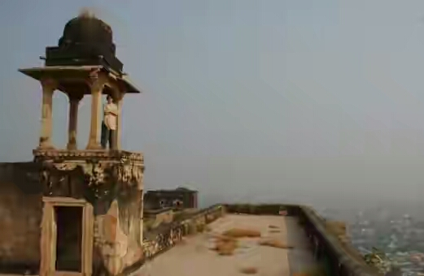 |
| 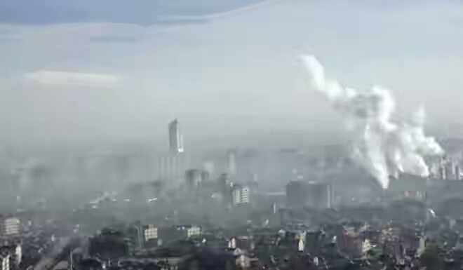 |
- Patna, India:
It is the largest and the capital city of Bihar, India with a population of about 1,683,000 people spread in an area of 53. 8 square miles. It was reported that the city has three and a half times higher value of Reparable Suspended Particulate Matter levels than the normal standard value. High vehicular, industrial emissions have result in air pollution and the residents of the city are being diagnosed with various respiratory disorders. The government has asked for the call back of vehicles older than 15 years and industrial emissions are also taken great care of.
|
- Al Jubail, Saudi Arabia:
It is a city located on the Eastern province of Persian Gulf and has a population of about 378,949 with major portion residing in the industrial area. Pollution is mainly caused due to the mismanagement of emissions from petrochemical industries and the city is said be having alarming amounts of heavy metal pollution. WHO reports have recorded 152 PM 2.5 levels in the city and the Governing body has implemented air monitoring centres.
|
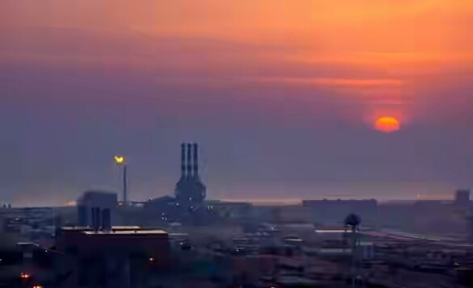 |
| 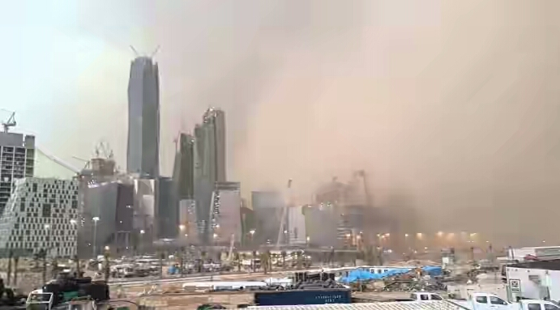 |
- Riyadh, Saudi Arabia:
This is the largest city in the Kingdom of Saudi Arabia with an area of 694 square miles and a population of about 7,125,180. The city is said to have 156 PM 2.5 levels and extremely high levels of PM 10 according to the reports by WHO. Vehicle emissions, petrochemical industries emissions and increased constructions have resulted in increased levels of pollution in the region.
|
- Allahabad, india:
It is a city in the Indian state of Uttar Pradesh. Although it is only the 36th most populous city in the country with a population of about 1,117,094. The levels of Suspended Particulate Matter and repairable Suspended Particulate Matter are alarmingly high with particles like soot, dust matter, toxic gases are being recorded. The levels of PM 2.5 is recorded to be 170 and 317 for PM 10 particles.
|
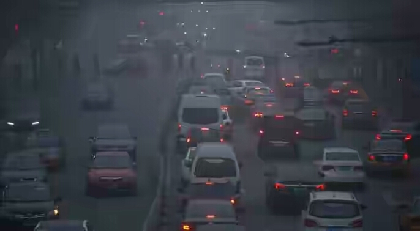 |
| 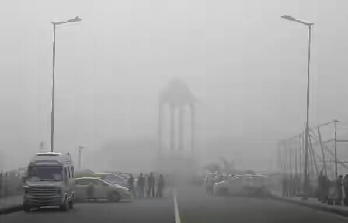 |
- Gwalior, India:
It is major and most pollute city in the Indian state of Madhya Pradesh in 2017. It has an annual average of 176 PM 2.5 in micrograms per cubic meter. Also, it has recorded 329 in PM 10 level rankings. The reasons maybe due to reliance on fossil fuels for vehicles and plantations, mismanagement of garbage and drainage and depletion of water sources.
|
- Zabol, Iran:
This most polluted city in the world is the capital of the country located in Sistan and Baluchistan Province in Iran. It is situated in the border of Afghanistan. Its population was estimated to be about 130,642 by 2006. This city records about 217 micrograms per cubic meter in the PM 2.5 level rankings released by WHO. Suffocating dust storms are very frequent in this largely neglected area that is inundated by poverty. Drying of wetaInds, lakes, rivers and decline of ground water have all resulted in alarming level of pollution in the city.
This is not just the story of these most polluted 10 cities around the world, but many more cities around the world, but many more cities have alarming levels of pollutants and that is a threat to whole of the mankind. Some serious steps need to be taken and a good initiative to save, protect the mother Earth will only help us to sustain life even for the coming generations.
|
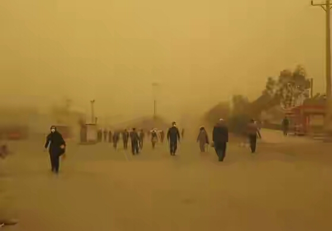 |
Top 10 Conutries with Strong Environmental Democracy Laws
10 Best Countries for Environmental Democracy
The environment and human well-being are inextricably linked. When governments, businesses and others make decisions about land and natural resources, they inevitably impact the health, livelihoods and quality-of-life of local communities. So it stands to reason that the public should have a right to be involved in the environmental decision-making-specifically, to know what is at stake, to participate in the decision itself and to have the ability to challenge decisions that disregard human rights or harm ecosystems.
The top countries with strong national laws for environmental democracy
The top three countries are all former Soviet states - Lithuania, Latvia and Russia. Many of their relevant national laws were enacted as part of democratization reforms in the 1990s and the UNECE legally binding Aarthus Convention on access to information, public participation and access to justice in environmental matters. Lithuania and Latvia have both ratified this convention and strengthened their legislation after doing so, such as Lithuania's amendments to its Law on Environmental Protection and Latvia's passage of its Environmental Protection Law.
| Lithuania |
2.42 |
United Kingdom |
2.14 |
| Lativa |
2.13 |
Hungary |
2.12 |
| Russia |
2.25 |
Bulgaria |
2.10 |
| United States |
2.16 |
Panama |
2.02 |
| South Africa |
2.16 |
Colombia |
1.99 |
Lowest-Scoring Countries for Environmental Democracy Laws
Many of the bottom performers also lacked requirements on collecting environmental information and monitoring compliance. National governments in Ethiopia, Nicaragua, Guatemala, Bangladesh and Thailand do not actually ensure that factories, mines and other facilities aren't harming people or the planet. And requirements for public participation in these countries are almost always limited to environmental impact assessments, leaving out other important decisions such as the development of forest management plans, protected area policies or environmental protection laws.
| Belize |
0.82 |
Sri Lanka |
0.67 |
| Cambodia |
0.76 |
Congo (REP Of) |
0.66 |
| Jordan |
0.76 |
Namibia |
0.59 |
| Saint Lucia |
0.73 |
Malaysia |
0.58 |
| Nepal |
0.68 |
Haiti |
0.51 |